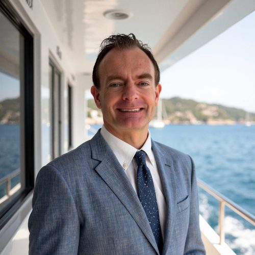

Joseph M. Lynch, CRPC®
Retirement & Financial Wellness · Kansas City and Oahu
- CRPC®
- Series 65
- Series 6
- Series 63
- RPF I & II
- CFP® coursework, Bryant University
Tap any credential to see what it covers.
About me
My first day on the phones at Security Benefit was in 2008, just as the financial crisis hit. From my very first call, one thing was clear: people needed real help understanding their retirement plans. I've spent the 16 years since doing exactly that.
I worked my way up to my RPF I & II, became a team lead, and learned Fi360, Morningstar, and the RFP process from both sides. I unofficially supported our 401(k) wholesaler, earned my Series 63, and helped grow that territory 35–45%. As a wholesaler myself, I added 150 producing advisors, roughly 47% growth, in a strong NEA territory where I spoke directly with educators, members, and association leaders.
Empower was my first step into financial wellness: one-on-one guidance and workshops for plan participants, with a goal of $50 million in new assets each year, which I met. Today I'm studying for the CFP® at Bryant University, and my goal is to get back to what I love most: financial wellness consulting.
Experience
Ameriprise Financial · Oahu, HI
- Built the business development pipeline and client-engagement framework for a growing advisory practice.
- Prepared planning analysis, portfolio reviews, and meeting materials using MoneyGuidePro, eMoney, Pershing, and Salesforce.
- Began developing a client workshop series on retirement income and financial wellness.
Security Benefit · Topeka, KS
- Primary on the trading line as one of two Series 6/63 licensed associates, supporting the advisor new-business line.
- Led webinars and educated participants on their plan options: in-service distributions, loans, and separation-from-service distributions.
- Updated internal guidelines and workflows; trained and mentored new associates.
Career break
- After my Waddell & Reed role was eliminated, I stepped away to be the primary caregiver for my children while actively managing my own investment portfolio.
Waddell & Reed (acquired by LPL Financial) · Overland Park, KS
- Primary point of contact for several 401(k) and 403(b) plans, including 3(21) and 3(38) fiduciary platforms.
- Led retirement plan RFPs from proposal through implementation, working with executives, HR, and frontline employees.
- Educated and enrolled participants and guided employees through rollover decisions; supported vendor-to-vendor plan conversions.
Empower Retirement · Overland Park, KS
- One-on-one retirement and financial wellness consultations: readiness, rollovers, allocation, and income planning.
- Led group workshops on retirement planning, investing, and plan features; served as point of contact for designated employer plans.
- Responsible for ~$50M in new assets each year, and met it.
Security Benefit · Topeka, KS
- Point of contact for 500+ advisors in a strong NEA territory; spoke directly with NEA members and executives.
- Added 150 producing advisors, about 47% growth.
- Led workshops and seminars for advisors and their clients; helped lead a Salesforce upgrade and advisor portal improvements.
Security Benefit · Topeka, KS
- Retirement plan services for 401(k), 403(b), 457, and annuity platforms; earned RPF I & II.
- Requested and responded to plan RFPs, including 3(21) and 3(38) platforms, using Fi360 and Morningstar.
- Unofficially supported the 401(k) wholesaler, earned Series 63, and helped grow the territory 35–45%.
Explore
Education
Bryant University · CFP® certification coursework (in progress)
Washburn University · B.A., Corporate Communication, emphasis in Educational Communication
Universidad de Cantabria, Santander, Spain · International Study Program